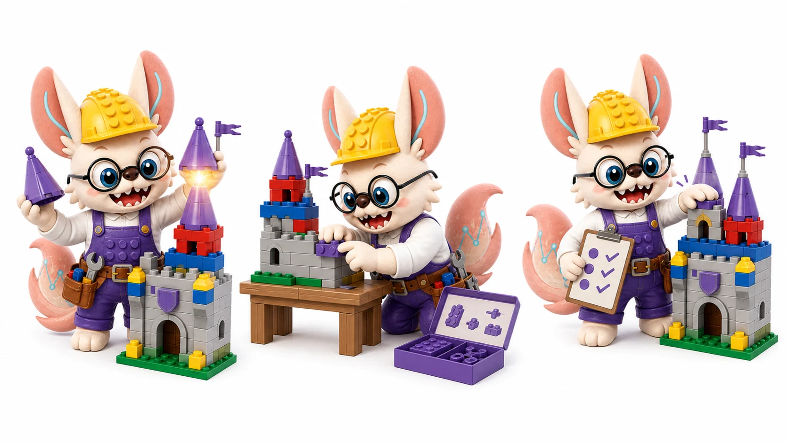
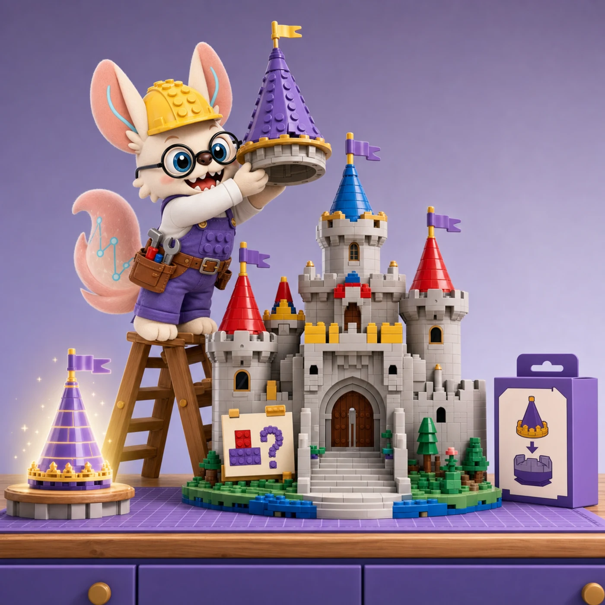
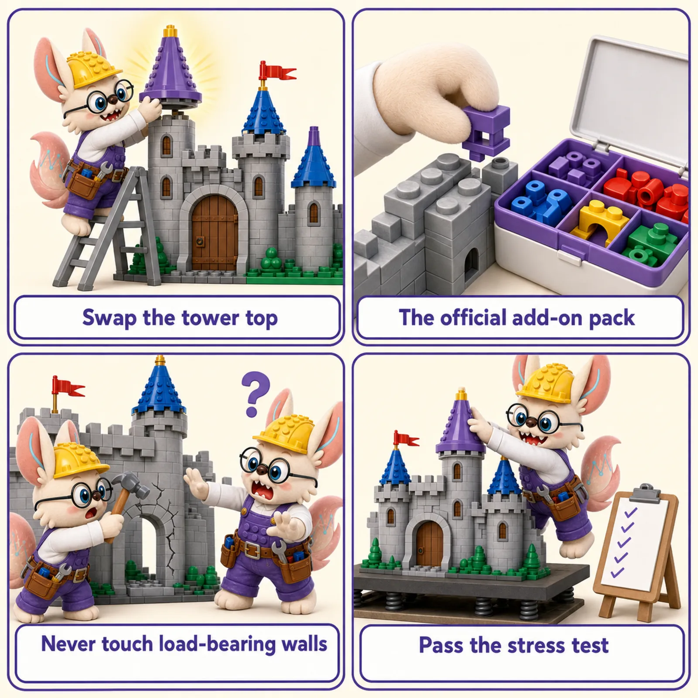

🔧 Fine-Tuning & Adaptation of Biological Foundation Models
Full fine-tuning, LoRA, adapters, prefix tuning, zero-shot transfer, and task head design —
how to take a pretrained biological foundation model and make it work on your specific task.
5
Adaptation Strategies
18+
Biology Models
6
Task Head Types
2019–2026
Year Range

LEGO lens · fine-tuning
城堡是现成的，换个塔尖就是新用途。
Pretraining gives you the finished castle; fine-tuning is the retrofit. 最小的改装达成新用途是手艺，乱动承重墙是事故——full FT、LoRA、adapters 的区别，就是改装的尺度与风险。

🧱 The Retrofit: Fine-Tuning in Six Jobs
「城堡是现成的，换个塔尖就是新用途。」
The kit is already built — pretraining did the hard part. Fine-tuning is what comes next: adapt the finished castle to a new commission with the least structural risk. Six jobs from the retrofit workshop, re-read as fine-tuning methods.
Job 1 · 现成的城堡 The castle is already built
The pretrained base
Nobody retrofits a brick pile. The whole point is that the castle already stands — arches, walls, proportions all learned. Your job is the commission, not the foundation.
Start from the checkpoint. Fine-tuning begins from pretrained weights: the general structure is free; you are buying adaptation, not construction. See the paradigm ↓
Job 2 · 只换塔尖 Swap only the tower top
Task heads & last-layer tuning
The hospital commission arrives. You pop the tower top off and snap a clinic tower on — ten bricks changed, a thousand untouched. Done by lunch.
Head tuning. Freeze the backbone, train only the task head: the cheapest retrofit, and often all a small dataset can safely buy. See task heads ↓
Job 3 · 官方改件包 The official add-on pack
LoRA & adapters
The kit company sells a snap-on pack: one precisely shaped adapter piece per brick it touches, and not a single original brick moves. Swap the pack for the next commission; the castle underneath stays factory-perfect.
LoRA. Trainable low-rank pairs (ΔW = BA) injected beside frozen weights — ~0.1–1% of parameters, near-full quality, tasks switch by swapping adapters. See LoRA ↓
Job 4 · 全堡逐块校 Retune every brick
Full fine-tuning
Some commissions won't accept snap-ons: every brick must be re-seated. With a warehouse of matching parts and a patient crew, the result is the closest possible fit — at the highest cost and the highest risk.
Full FT. Update all weights: best quality when data is sufficient, the wrong move when it isn't. See full FT ↓
Job 5 · 别拆承重墙 Never touch load-bearing walls
Catastrophic forgetting
The apprentice removes one elegant arch to fit a door — and the tower sags. The castle's strength was never in the door; it was in everything he didn't think about.
Forgetting. Overwrite the pretrained representations with a small dataset and the model forgets how to stand. Early stopping and gradual unfreezing are how you quit before the walls crack. See the warning ↓
Job 6 · 改装验收单 The retrofit inspection
Evaluation
The retrofit is not done when the builder says so — it is done when the inspector stops finding cracks. Every modified castle goes on the same stress bench as a new build.
Evaluate like it's new. Hold out a validation set from day one: the retrofit ships only when held-out performance confirms the castle still stands. See the guide ↓

The retrofit in four jobs. Swap the tower top (head tuning) · the official add-on pack (LoRA) · never touch load-bearing walls (catastrophic forgetting) · pass the stress test (evaluation).
「不重砌，只改装；不动承重墙。」
From Pretrained to Deployed
Pretraining teaches a model to "understand" biology — but that's not a task
A foundation model pretrained on 30 million single cells (like scFoundation) has learned
a rich internal representation of gene expression patterns. But it cannot answer your
biology question out of the box: it doesn't know you want to predict cell type, it doesn't
know the labels in your dataset, and it wasn't optimized for your specific tissue or disease context.
Adaptation is the step that bridges pretraining and deployment.
The central tension in adaptation is plasticity vs. stability:
you want the model to adapt to your task (plasticity), but not forget what it learned
during pretraining (stability). Update too many parameters and you get
catastrophic forgetting — the pretrained representations are overwritten.
Update too few and the model doesn't adapt. The five strategies on this page navigate
this tradeoff at different points on the spectrum.
🧠 Full FT
Update all weights. Best quality with sufficient data; risk of catastrophic forgetting.
🧩 LoRA
Inject trainable low-rank matrices. ~0.1–1% of parameters. Near-full quality.
🔧 Adapters
Small bottleneck modules inserted per layer. Modular, composable, parameter-efficient.
📝 Prefix/Prompt
Prepend learnable virtual tokens. Zero architectural change; backbone completely frozen.
⚡ Zero/Few-Shot
No weight update at all. Read the task from input context (STACK/ORCA style).
Visual Guide to Adaptation Strategies
1
Full Fine-Tuning
Update all model parameters on task-specific data — maximum flexibility, maximum risk
Full fine-tuning updates all parameters of the pretrained model plus a newly
added task head, using labeled data from the target task. Every gradient step modifies the
original pretrained weights θ → θ'. This gives the maximum expressiveness to fit the task,
but carries a real risk of catastrophic forgetting: if the labeled dataset is small
relative to the number of parameters, the model may overwrite the useful biological knowledge
it acquired during pretraining, resulting in worse generalization than a simpler adapter-based approach.
Three standard mitigations: (1) small learning rate (1e-5 instead of 1e-3)
slows how fast weights drift from their pretrained values; (2) layer-wise learning
rate decay (LLRD) applies a smaller learning rate to early layers (which encode
more general biological features) and a larger rate to later layers; (3) early
stopping on a held-out validation set catches the point before forgetting sets in.
LEGO analogy: You have a master builder's finished set (pretrained model).
Full fine-tuning is like letting a new builder completely take over — they can change any
brick to build whatever they want (maximum flexibility), but if they're not experienced
enough (small dataset), they might accidentally dismantle the most structurally important
pieces while chasing a new design goal.
Variant
Key technique
Biology examples
When to use
Standard Full FT
Single LR for all layers
Geneformer cell type classification
Large labeled dataset (>50k cells)
LLRD
Smaller LR for early layers, larger for late
DNA-BERT variant effect; ESM2 tasks
Medium data; want to preserve low-level features
Gradual unfreezing
Unfreeze layers one at a time from top down
ULMFiT-style genomics FT
Small data; maximum forgetting mitigation
Domain-adaptive FT
First unsupervised FT on domain text, then task FT
BioMedBERT; PubMedBERT
Domain shift from pretraining data to task domain
2
LoRA — Low-Rank Adaptation
Freeze all original weights; inject trainable low-rank matrix pairs ΔW = BA into each attention layer
LoRA (Hu et al., 2022) freezes all original model parameters and injects a pair of trainable
low-rank matrices B (d×r) and A (r×d) in parallel with each
weight matrix W (typically in the query and value projections of each attention layer).
The effective weight update is ΔW = BA, where rank r ≪ d (typically 4–64 vs. d=768–4096).
B is initialized to zero (so ΔW = 0 at the start of training — the model begins exactly
at its pretrained state) and A is initialized randomly.
The key practical advantage beyond parameter count: at inference time, BA is merged
back into W, so there is zero architectural change and zero inference overhead.
To switch tasks, you swap out a small ΔW matrix (a few MB) rather than reloading the full
model (tens of GB). This makes LoRA ideal for multi-task biological foundation models
where you need the same backbone for cell type annotation, trajectory inference, and
perturbation prediction simultaneously.
LEGO analogy: LoRA is like adding a small, precisely shaped adapter piece
on top of an existing brick (W), rather than replacing the brick itself. The adapter
changes how the brick connects to the next level, but the original brick is unchanged and
the structure still looks the same from the outside. Switch tasks by swapping the adapter
— no need to dismantle and rebuild.
Variant
Key change
Use case
LoRA (Hu 2022)
Baseline: low-rank ΔW = BA per layer
Foundation for most biology PEFT work
QLoRA (Dettmers 2023)
4-bit quantized frozen backbone + LoRA in fp16
Large protein/genomic LMs on single GPU
DoRA (Liu 2024)
Decompose W into magnitude + direction; LoRA the direction
Better stability on smaller biology datasets
rsLoRA
Scale α by 1/√r instead of 1/r
More stable training with large r
LoKr / LoHa
Kronecker / Hadamard parameterization
Specialized dense layers; protein structure heads
3
Adapter Layers
Insert small bottleneck modules inside each transformer block — modular, composable, task-specific
Adapter layers (Houlsby et al., 2019) insert small bottleneck modules
inside each transformer block: a down-projection Linear(d→m), a nonlinearity (GELU),
and an up-projection Linear(m→d), plus a residual connection. The bottleneck dimension m
is much smaller than d (typically 64–256 vs. 768–4096), so the total trainable parameters
are <2% of the backbone. Everything else is frozen.
The key advantage over LoRA: adapters are inherently modular and composable.
You can stack multiple adapters per layer (one for cell type, one for disease state), mix and
match them at inference time, or remove adapters entirely without touching the backbone.
The Pfeiffer variant (only one adapter after the FFN, not two) achieves
near-identical performance with half the adapter parameters.
LEGO analogy: Adapters are like extension ports on a LEGO
Technic hub — the hub (pretrained model) has official connection points where you can
plug in specialized modules (adapters for different sensors, motors, or tools). Each
module is small and interchangeable; you can run two modules in parallel or swap them
without rebuilding the hub.
Adapter variant
Insertion point
Params
Notes
Houlsby (Serial)
After attention + after FFN
~3.6% baseline
Original; slight inference cost
Pfeiffer
After FFN only
~1.8%
Preferred: same quality, fewer params
Parallel Adapter
Side-path parallel to attention
~2%
No sequential depth increase; faster inference
AdapterFusion
Attention over multiple task adapters
Varies
Multi-task: combine task-specific adapters for a new task
Prefix and prompt tuning make zero changes to the model architecture or weights.
Instead, they prepend a small set of learnable "virtual token" embeddings to the input sequence.
These virtual tokens are not real biological tokens — they don't correspond to genes or amino
acids. They are optimized by gradient descent to "steer" the frozen backbone toward the target
task, working through the model's own attention mechanism.
Prefix tuning (more powerful) injects trainable keys and values at every
transformer layer, giving each layer its own task-specific context. Prompt tuning
(simpler) only modifies the input, relying on the model to propagate the task signal through
its layers via attention. For biology: prefix tuning is better for small biology datasets;
prompt tuning only approaches adapter/LoRA quality at very large model scales (>10B parameters).
LEGO analogy: Prefix tuning is like attaching a small instruction booklet
to the front of the brick pile before the builder starts. The builder (frozen model)
reads this special header first and adjusts their building strategy accordingly — without
any of the actual bricks in the pile being changed. The booklet pages are what you train;
the bricks are untouched.
Method
Where trained tokens are added
Trainable params
Best for
Prefix Tuning
Every layer K, V (via MLP reparameterization)
<0.1%
Small labeled data; want complete backbone preservation
Prompt Tuning
Input layer only
<0.01%
Very large models; multi-task serving
P-Tuning v2
Every layer, no reparameterization
<0.1%
Sequence labeling (per-token prediction); stronger than prompt tuning
InstructBio-style
Natural language prefix (handcrafted)
0 (frozen)
Zero-shot; when you have a strong instruction-tuned model
5
Zero-Shot & Few-Shot Transfer
No weight update — read the task from input context (in-context learning) or from pretraining knowledge
Zero-shot and few-shot transfer require no weight updates at all.
In zero-shot, a pretrained model is directly applied to a new task, relying on
the knowledge acquired during pretraining: Geneformer can predict cell type by embedding a query
cell and running a kNN search over labeled reference cells — no task-specific training is needed.
ESM2 can predict variant pathogenicity by comparing the log-likelihood of the wild-type vs.
mutant sequence.
In-context learning (few-shot) is a stronger form, primarily available in
large decoder-based models: the model reads a few labeled examples as part of the input context
and uses the pattern to predict the label for a new query. STACK (Arc Institute,
2026) extends this to single-cell biology — treating each cell as a "row" in a tabular context
and predicting perturbation responses from a handful of reference cells in the same input.
No gradient, no labeled training data pipeline, no fine-tuning infrastructure required.
LEGO analogy: Zero-shot is handing the master builder (frozen model) a brand
new bag of bricks and saying "build what you know how to build" — they do the best they can
with their existing skills. Few-shot is showing them three photos of what you want first:
"here are three examples of what the finished model should look like — now build me a fourth."
No new training is needed in either case.
Method
Labels needed
Biology examples
When it works best
Zero-shot embedding + kNN
Reference atlas only
Geneformer cell type, scGPT zero-shot
Good pretrained representation; query is in-distribution
Zero-shot log-likelihood
None
ESM2 variant effect, DNABERT-2 motif
Masked LM; predict masked tokens at mutation site
Few-shot ICL
k=5–50 labeled examples in context
STACK, Orca, BioMedGPT
Large decoder model; tabular or token-level prediction
Linear probe
Small labeled set; frozen backbone
All biology FMs benchmark
Fast baseline before committing to full FT/PEFT
Task Head Design
The task head is the output module attached to the frozen or fine-tuned backbone.
Its design is determined by the biological task: what tokens to pool, what architecture to use,
and what loss to train with. Getting the task head wrong is a common source of poor performance
even when the backbone is excellent.
Cell Type Classification
Input: CLS token embedding or mean-pool of all gene tokens. Head: Linear(d → n_classes) + softmax. Loss: Cross-entropy. Examples: Geneformer, scGPT, scFoundation cell annotation.
Input: Mean-pool of perturbed gene tokens. Head: MLP(d → d_genes) → full gene expression vector. Loss: MSE on differentially expressed genes (optionally weighted). Examples: scGPT perturbation fine-tuning, GEARS output head.
Gene Regulatory Network
Input: Pair of gene token embeddings (geneᵢ, geneⱼ). Head: Bilinear(dᵢ, dⱼ → 1) or MLP on concatenation. Loss: Binary cross-entropy (edge / no-edge). Examples: scGPT GRN, Geneformer network inference.
Variant Effect (Genomics)
Input: Log-likelihood difference at masked position (no head needed for zero-shot). Head for FT: Linear on CLS or masked token → pathogenicity score. Loss: BCE on ClinVar labels / MSE on fitness. Examples: ESM2, DNABERT-2, Nucleotide Transformer.
Protein Structure (per-residue)
Input: All residue token embeddings from ESM2. Head: Contact prediction: outer product → 2D map → ResNet. Or ESMFold full structure module. Loss: FAPE (frame-aligned point error) / contact BCE. Examples: ESMFold, SaProt, ProteinMPNN.
What tokens to pool? — The three canonical choices
Pooling strategy
How
Best for
Avoid when
CLS token
Return the embedding of a special [CLS] token prepended to input
Sequence-level labels (cell type, disease)
Model not pretrained with CLS objective
Mean pooling
Average all token embeddings
Robust general-purpose; works for encoder-only and decoder-only
LoRA: Low-Rank Adaptation of Large Language Models
Hu et al. | ICLR 2022
LoRA
Introduces low-rank decomposition ΔW = BA as a parameter-efficient alternative to full fine-tuning, with zero inference overhead. Demonstrated on GPT-3 and becomes the dominant PEFT method for biology foundation models post-2022.
Adapter-Based Extension of BERT for Multi-Task NLP
Houlsby et al. | ICML 2019
Adapter
Proposes the bottleneck adapter module inserted per transformer layer. Achieves near-full fine-tuning performance with ~3.6% additional parameters. Foundational for all adapter-based biology transfer approaches.
Prefix-Tuning: Optimizing Continuous Prompts for Generation
Li & Liang | ACL 2021
Prefix Tuning
Prepends trainable "virtual" prefix vectors to every transformer layer's key and value matrices. Backbone is completely frozen. Achieves comparable performance to fine-tuning on low-data regimes with <0.1% trainable parameters.
Combines 4-bit NF4 quantization of the frozen backbone with LoRA adapters in bf16. Enables fine-tuning of 65B-parameter models on a single GPU. Critical for applying large protein or genomic foundation models in resource-constrained settings.
Geneformer: Transfer Learning Enables Predictions in Network Biology
Theodoris et al. | Nature 2023
scRNAFine-tuning
Pretrained on 29.9M single cells; fine-tuned for cell type classification, gene dosage sensitivity prediction, and in silico perturbation. Demonstrates that rank-based tokenization + masked gene modeling enables powerful zero-shot and fine-tuned cell representations.
scGPT: Toward Building a Foundation Model for Single-Cell Multi-omics
Cui et al. | Nature Methods 2024
scRNAFine-tuning
Generative decoder-based foundation model pretrained on 33M cells; fine-tuned for cell annotation, perturbation response, and GRN inference. Shows that a unified pretraining objective can transfer across multiple downstream biology tasks via task head attachment.
ESMFold: Language Models of Protein Sequences at the Scale of the Known Universe
Lin et al. | Science 2023
ProteinFull FT (structure module)
Attaches a full structure prediction module (Evoformer-inspired) to a frozen ESM2 backbone as a task head. The backbone is largely frozen; the structure module (trained from scratch) constitutes the "fine-tuning." Predicts 3D structure in ~0.5s without MSA.
DNABERT-2: Efficient Foundation Model for Multi-Species Genome
Zhou et al. | ICLR 2024
GenomicsFine-tuning
Replaces k-mer tokenization with BPE for efficient multi-species genomic language modeling. Fine-tuning with full FT + LLRD achieves SOTA on promoter prediction, splice site detection, and transcription factor binding across 28 genome understanding benchmarks.
STACK: In-Context Learning for Single-Cell Perturbation Prediction
Arc Institute | bioRxiv 2026
Zero-Shot / ICLscRNA
Treats each cell as a row in a tabular context window and uses true in-context learning (no gradient, no fine-tuning) for perturbation response prediction. Pretrained on Perturb-Sapiens (149M cells); outperforms supervised models on zero-shot combinatorial perturbations.
scFoundation: Large-Scale Single-Cell Foundation Model toward Universal Embedding
Hao et al. | Nature Methods 2024
scRNAFine-tuningAdapter
Pretrained on 50M cells; demonstrates that read-depth-aware tokenization + asymmetric encoder-decoder architecture provides transferable cell embeddings. Fine-tuning with a lightweight adapter head achieves SOTA on drug response prediction, spatial deconvolution, and developmental trajectory.
No labeled data → Zero-shot (ESM2 variant log-likelihood, Geneformer kNN, STACK ICL). A linear probe on frozen embeddings is a fast sanity check. <500 examples → Prefix tuning or LoRA with very small r (4–8). 500–10k → LoRA (r=16–32) or adapter layers. >50k → Full fine-tuning with LLRD is competitive; LoRA still often preferred for multi-task scenarios.
2
How many tasks do you need to serve from the same backbone?
One task → Full fine-tuning or LoRA both work; pick based on data size and GPU budget. Multiple tasks → LoRA or adapters: keep one backbone, swap lightweight task modules (a few hundred MB vs. tens of GB per full model). AdapterFusion enables learning a new task from existing task adapters without forgetting any of them.
3
Is your task very different from the pretraining domain?
In-distribution (e.g., fine-tune scGPT for a new tissue in the same species) → LoRA r=8 is usually sufficient. Zero-shot embedding may already work. Domain shift (e.g., fine-tune a human-trained model for plant genomics) → Full fine-tuning with domain-adaptive pretraining first (a few epochs of unsupervised MLM on plant sequences), then task fine-tuning. LoRA with larger r (32–64) also helps close the gap.
4
What's your compute and deployment constraint?
Single GPU ≤ 24GB VRAM → QLoRA (4-bit quantized backbone + LoRA adapters) is the standard approach for models >7B parameters. Inference latency is critical → Merge LoRA into backbone before deployment (zero overhead). Avoid adapters (small but nonzero overhead). Prefix tuning increases sequence length (slightly slower attention). Model must be frozen for regulatory/compliance reasons → Prefix tuning or zero-shot only.
5
Quick diagnostic: run a linear probe first
Before committing to fine-tuning: freeze the backbone entirely and train only a linear layer on the embeddings. If linear probe accuracy is already >90% of your target, LoRA or adapter will close the remaining gap cheaply. If linear probe accuracy is near chance level, the pretrained representations are not transferable — consider full fine-tuning or a different base model entirely.
Hands-On Resources
Hugging Face PEFT Library
Official LoRA, AdaLoRA, IA³, prefix tuning, and adapter implementations for any HuggingFace model. Covers Geneformer, ESM2, and most biology FMs on the Hub.
Official tutorial for full fine-tuning of Geneformer for cell type classification and network inference. Includes layer-wise learning rate decay schedule.
Community LoRA fine-tuning scripts for ESM2 on variant effect, thermostability, and functional annotation. Shows how to apply QLoRA to 650M / 3B ESM2 on a single A100.